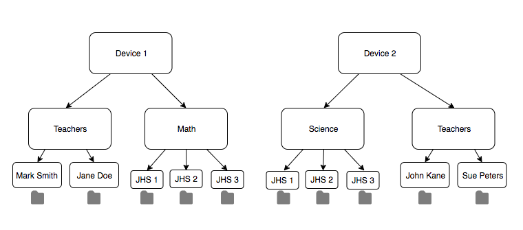
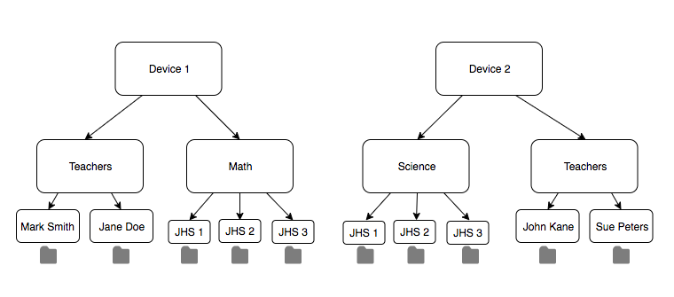

Ghana's Asanka
Asanka - Community Bowl in Ghana

The Power Of Asanka
TechAide and Asanka Help Communitites Continue to Advance with Access to Information

Asanka In Use
Across the Many Uses for Asanka, Education is their top priority
iSchool and Asanka
Across the Many Uses for Asanka, Education is their top priority

 
